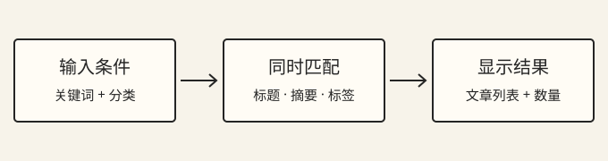

原生 JavaScript 搜索与筛选笔记
示例文章
一个只有四篇文章的博客，不需要搜索服务也能提供好用的筛选。最重要的不是代码有多短，而是每一步都能单独解释：数据来自哪里，哪些条件生效，结果如何显示，以及脚本失败时读者还能做什么。下面是这个站点使用的思路。
先把文章当成数据
每篇文章登记标题、摘要、分类和标签。搜索只检查这些字段，正文继续留在 HTML 中。这样既不用下载所有文章才能开始搜索，也能让摘要成为真实的阅读线索。Home 的最近文章、Blog 的索引与文章头部需要同步，不能各自维护互相矛盾的日期。
让条件组合有明确含义
搜索前去掉首尾空白，将拉丁字母转成小写，再按空白拆成关键词。“JavaScript DOM”表示两个词都应匹配；分类是另一个同时成立的条件。切换分类保留关键词，删除关键词保留分类，“重置筛选”才清空两者。读者不需要猜按钮背后还做了什么。
const words = query.trim().toLowerCase().split(/\s+/).filter(Boolean);
const matches = posts.filter((post) => {
const text = [post.title, post.summary, ...post.tags].join(' ').toLowerCase();
return (category === 'all' || post.category === category)
&& words.every((word) => text.includes(word));
});这段示例只说明匹配规则，不包含页面初始化与错误恢复。实际实现还要检查分类是否合法，以及数据是否准备好，才能切换读者看到的列表。

创建节点，不拼接用户输入
使用 createElement 创建标题和链接，用 textContent 放入文字。关键词只参与比较，不进入 HTML 字符串。文章地址来自站点登记的数据，并通过相对站点根路径解析；这让网站放在子目录时也能打开文章。页面初始化完成前，静态索引一直保留。
渐进增强的目标是：脚本成功时多一些便利，失败时仍然有文章可读。
给中文输入留出过程
中文输入法会经历拼音组合与选字。如果每个中间状态都立即刷新结果，会出现列表闪动和不必要的数量播报。组合输入期间先保留当前列表，组合结束后再匹配；普通输入仍即时更新。结果变化不移动焦点，读者可以继续输入。
| 操作 | 应有结果 |
|---|---|
| 选择分类 | 保留当前关键词 |
| 没有匹配 | 说明原因并提供重置入口 |
| 脚本初始化失败 | 继续显示静态文章索引 |
最后用失败场景检查设计
试一次多词搜索、一次未知分类、一次无结果，再禁用脚本刷新页面。还可以直接打开带 q 和 category 的网址，确认刷新后状态能恢复。小网站不必引入复杂框架，但这些简单检查能避免“演示时能用，换个入口就坏”的问题。